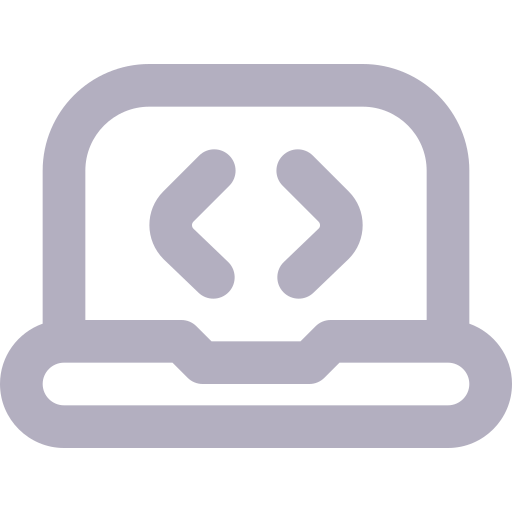

Wendel Duarte
DESENVOLVEDOR
Familiarizado com tecnologias de Desenvolvimento Web, com ênfase no Front-End. Utilizo JavaScript, React e Node.js, na implementação de soluções.
Inglês Fluente
Capacidade de comunicação com falantes nativos. Convivo com a língua desde a infância, assistindo a filmes e lendo conteúdos em inglês.
Estudos
Aprendizado focado em programação desde 2022. Minhas primeiras pesquisas sobre HTML começaram durante os intervalos do trabalho.
Formação
Cursando EAD de Análise e Desenvolvimento de Sistemas na Faculdade FAM, com previsão de conclusão em 2027.
Pensamento Lógico
Capacidade de elaborar e visualizar conceitos abstratos, o que contribui na solução objetiva de problemas.
 Projetos
Polaris
Automatizador de Mensagens
Aplicativo para Linux, macOS e Windows que combina uma interface atraente e intuitiva com a capacidade de enviar mensagens em massa pelo WhatsApp. O aplicativo utiliza a API whatsapp-web.js para auxiliar nas funcionalidades, e possui uma API privada para controle de usuários.
Stack
- Electron - Para maior compatibilidade entre sistemas operacionais.
- Node.js - Para acesso às bibliotecas cruciais nas funcionalidades do app.
- PostgreSQL - Permite o controle de login dos usuários do aplicativo.
Contribuidores
SFE
Dashboard de Pedidos
O Sistema da Ferramentaria Elétrica é um website desenvolvido para gerenciar pedidos no setor de ferramentaria da empresa Vale, localizada em Vitória, Espírito Santo. Criado de forma voluntária, o sistema foi concebido como uma melhoria para o processo de solicitação de materiais na ferramentaria.
Stack
- React - Contribui para a fluidez da navegação no website.
- TypeScript - Segurança reforçada na nossa API privada.
- Node.js - Para acesso às bibliotecas cruciais na criação da API.
Resultado
O SFE foi analisado e aprovado pela empresa, que hoje o utiliza.
Contribuidores
GEEO
Landing Page
Uma landing page empresarial totalmente personalizada, fui responsável pelo design, pela implementação e por algumas ilustrações, sempre atendendo às solicitações do cliente.
Stack
- React - Contribui para a fluidez da navegação no website.
- JavaScript - Interatividade extra em cada detalhe.
Resultado
A landing page foi aprovada pelo cliente, que hoje a utiliza para prospecção de clientes e apresentação da empresa.
Contribuidores
Animais Carentes
Landing Page
Um projeto voluntário desenvolvido para a ONG Animais Carentes, um abrigo de animais localizado em Vila Velha, no estado do Espírito Santo. Trata-se de uma página estática criada para facilitar o acesso a informações sobre adoção, doações e apadrinhamento de pets.
Stack
- HTML e CSS - Front-End elegante, semântico e com responsividade impecável.
- JavaScript - Interatividade extra em cada detalhe.
Contribuidores
Conhecimentos
Destaco aqui alguns dos meus aprendizados adquiridos ao longo do tempo.
- Linux- Fiz a migração para o Linux e utilizo o Fedora e Garuda no dia a dia.
- HMTL, CSS e JavaScript- A tríade que é a base das minhas aplicações.
- React, Vue e Electron- Essenciais para projetos escaláveis e robustos.
- Node.js- Com auxílio de pesquisas, já sou capaz de criar APIs simples, usando as bibliotecas mais comuns.
- SQL e Bancos de Dados Relacionais- Apesar de ainda iniciante, tenho boa noção do funcionamento destas tecnologias.
Contato
Entre em contato pelos métodos abaixo. Ficarei feliz em responder!
- Telefone: +55 (47) 9 9198-4211
- E-mail: wendel.duarte@proton.me